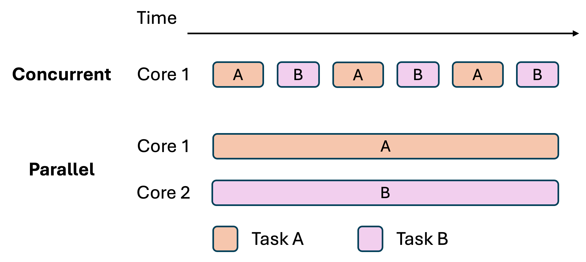

Learning Goals
Distinguish concurrency from parallel execution.
Separate a task from the thread that runs it.
Explain why a shared update can fail.
Choose a coordination or execution tool for the problem.
Handle completion, failure, and cancellation.
Why Use Concurrency?
Keep an application responsive during slow work.
Handle several independent requests.
Use multiple CPU cores for suitable calculations.
Example: load a file while the user keeps working.
Concurrency and Parallelism

Concurrency: tasks make progress during overlapping periods.
One CPU core can switch between concurrent tasks.
Parallelism: tasks execute at the same time.
Multiple CPU cores can run tasks in parallel.
Processes, Threads, and Tasks
A process is a running program.
A thread is one path of execution inside a process.
Threads share the process heap but keep separate call stacks.
A task is work that a thread can execute.
Runnablerepresents a task with no return value.
Runnable task = new GreetingTask();
Thread worker = new Thread(task, "worker");
worker.start();A Named Runnable Task
Implement the
Runnableinterface.Put the task inside
run().The task does not create a thread.
class GreetingTask implements Runnable {
@Override
public void run() {
System.out.println("Hello from "
+ Thread.currentThread().getName());
}
}A Runnable Lambda
Runnablehas one abstract method:run().A lambda provides that method body without a named class.
()is an empty parameter list.->separates the parameters from the body.
Use a named class when the task needs more structure or reuse.
Runnable task = () ->
System.out.println("Hello from "
+ Thread.currentThread().getName());Task-First Design
Runnablekeeps the work separate from its execution policy.The same task can run through different execution mechanisms.
Extending
Threadcombines the work with one execution mechanism.Use a task object unless the thread itself needs specialized behavior.
start() and run()
run()is an ordinary method call.worker.run()runs on the current thread.
start()starts a separate thread.worker.start()schedules the new thread.
Thread worker = new Thread(() ->
System.out.println(Thread.currentThread().getName()));
worker.run();
worker.start();Thread Scheduling
The scheduler decides which runnable thread executes.
Starting first does not guarantee finishing first.
The output order may change across runs.
A correct result must tolerate valid scheduling changes.
Waiting for Completion with join()
Both threads can make progress after their
start()calls.Each
join()waits for its target thread.The final message follows both tasks.
The caller must handle
InterruptedException.
Thread first = new Thread(() -> System.out.println("Hello"));
Thread second = new Thread(() -> System.out.println("Bye"));
first.start();
second.start();
first.join();
second.join();
System.out.println("Both finished");Example:
ThreadBasicsDemo.java
join() Semantics
worker.join()waits untilworkerterminates.Joining a finished worker makes its earlier writes visible.
worker.join(1000)waits up to about one second.A timed join can return before the worker finishes.
Check
worker.isAlive()after a timed join.
Pausing with sleep()
Thread.sleep(100)pauses the current thread.The requested delay is not an exact schedule.
Sleep does not wait for another task to finish.
Sleep does not release a lock.
Use completion signals when one task depends on another.
Java Thread States
NEW: created but not started.RUNNABLE: executing or ready to execute.BLOCKED: waiting to enter asynchronizedregion.WAITING: waiting without a timeout.TIMED_WAITING: waiting with a time limit.TERMINATED: execution has ended.
Interruption Requests Cooperation
worker.interrupt()requests interruption.It does not forcibly kill the worker.
Interruptible waits can throw
InterruptedException.
Task code must respond to the request.
Interruption During a Wait
Exit this task when sleep is interrupted.
Restore the interrupt flag before returning.
A method may instead declare
throws InterruptedException.
Runnable task = () -> {
try {
Thread.sleep(1000);
System.out.println("Work finished");
} catch (InterruptedException exception) {
Thread.currentThread().interrupt();
return;
}
};Example:
InterruptionDemo.java
Daemon Threads
A daemon thread supports background work.
The JVM can exit when only daemon threads remain.
Call
setDaemon(true)before starting a platform thread.Do not rely on a daemon to finish an important save.
Quick Check: Starting, Waiting, and State
A program creates
Thread worker = new Thread(task). To runtaskconcurrently with the current thread, should it callworker.run()orworker.start()?Answer: Call
worker.start(). Callingworker.run()executestaskon the current thread.After
worker.start(), the current thread must wait forworkerto finish before reading its result. IsThread.sleep(100)a reliable way to wait?Answer: No.
sleep()only delays the current thread. Useworker.join()to wait forworker.A debugger shows that
workeris actively executing Java instructions. WhichThread.Statevalue can Java report:RUNNINGorRUNNABLE?Answer:
RUNNABLE. Java does not define a separateRUNNINGstate.
When synchronized Is Enough
Use
synchronizedfor a simple shared invariant.It releases its monitor automatically.
Use explicit locks when extra control is needed.
Examples include timed acquisition and separate condition queues.
Explicit Locking with ReentrantLock
lock()explicitly acquires the lock.The owning thread may acquire a reentrant lock again.
Each
unlock()releases one acquisition, usually infinally.
private final ReentrantLock lock = new ReentrantLock();
private int balance;
public void deposit(int amount) {
lock.lock();
try {
balance += amount;
} finally {
lock.unlock();
}
}Waiting While Holding a Lock
A withdrawal may need to wait for a deposit.
Sleeping while holding the account lock blocks deposits.
The deposit cannot change the balance.
A condition wait releases the lock during the wait.
A Condition and Its Lock
newCondition()creates a condition for this lock.The balance and condition use the same lock.
This example assumes positive amounts.
All account methods must follow the same locking rule.
class LockingBankAccount {
private final ReentrantLock lock = new ReentrantLock();
private final Condition funds = lock.newCondition();
private int balance;
// The next two slides add the account methods.
}Waiting on a Condition
await()releases the held lock while waiting.It reacquires the lock before returning normally.
Use
whileto recheck after every wakeup.
public void withdraw(int amount) throws InterruptedException {
lock.lock();
try {
while (balance < amount) {
funds.await();
}
balance -= amount;
} finally {
lock.unlock();
}
}State Change and Signalling
Change the shared state while holding the lock.
signalAll()wakes condition waiters.Woken threads must reacquire the lock.
A wakeup does not guarantee sufficient funds.
public void deposit(int amount) {
lock.lock();
try {
balance += amount;
funds.signalAll();
} finally {
lock.unlock();
}
}Example:
LockingBankAccount.javaandLockingBankAccountDemo.java
BlockingQueue Handoff
A producer puts work into a queue.
put()waits when a bounded queue is full.
A consumer takes work from the queue.
take()waits when the queue is empty.
The queue handles locking and signalling.
BlockingQueue<String> jobs = new ArrayBlockingQueue<>(10);
// Producer task
jobs.put("report.csv");
// Consumer task
String job = jobs.take();
System.out.println(job);Example:
BlockingQueueDemo.java
Atomic Concurrent Map Updates
An ordinary
HashMapis unsafe for uncoordinated concurrent updates.ConcurrentHashMapsupports concurrent access.merge()performs one atomic update for a key.A sequence of separate map calls may still race.
ConcurrentHashMap<String, Integer> counts = new ConcurrentHashMap<>();
counts.merge("completed", 1, Integer::sum);Example:
ConcurrentMapDemo.java
ExecutorService and Worker Threads
Creating one platform thread per task can be expensive.
An executor accepts tasks for execution.
A thread pool reuses worker threads.
Task code stays separate from worker management.
Task Results: Runnable and Callable
Runnable.run()returns no value.Callable<T>.call()returns a value of typeT.Callable.call()may throw a checked exception.
submit()returns aFuture.
Runnable message = () -> System.out.println("Done");
Callable<Integer> calculation = () -> 6 * 7;Task Results with Future
The pool has two worker threads.
submit()returns before the result is ready.get()waits for the result.Try-with-resources closes the executor in Java 21.
try (ExecutorService pool = Executors.newFixedThreadPool(2)) {
Future<Integer> first = pool.submit(() -> 6 * 7);
Future<Integer> second = pool.submit(() -> 5 * 5);
int total = first.get() + second.get();
System.out.println(total); // 67
}Example:
ExecutorFutureDemo.java
What Can Happen to a Future?
Success:
get()returns the result.Task failure:
get()throwsExecutionException.Cancellation:
get()throwsCancellationException.Interrupted caller:
get()throwsInterruptedException.Timeout: timed
get()throwsTimeoutException.
Future Timeouts and Cancellation
get(100, MILLISECONDS)limits this wait.A timeout leaves the task running.
cancel(true)requests interruption.The task must cooperate with cancellation.
try {
Integer result = future.get(100, TimeUnit.MILLISECONDS);
System.out.println(result);
} catch (TimeoutException exception) {
future.cancel(true);
System.out.println("Task took too long");
}Example:
FutureTimeoutDemo.java
Executor Shutdown
shutdown()rejects new tasks.Submitted tasks can still finish.
awaitTermination()waits for executor termination.shutdownNow()requests interruption of running tasks.Try-with-resources waits for termination on close.
That close can exceed a timeout used by
Future.get().
Dependent Asynchronous Stages
CompletableFuturerepresents a result produced later.supplyAsync()starts a result-producing task.A dependent stage waits for an earlier result.
thenApply()transforms that result.
join()waits for the final result.
try (ExecutorService pool = Executors.newFixedThreadPool(2)) {
CompletableFuture<Integer> length = CompletableFuture
.supplyAsync(() -> "Concurrency", pool)
.thenApply(String::length);
System.out.println(length.join()); // 11
}Combining Independent Results
Submit both tasks before combining them.
thenCombine()waits for both successful results.The combining function receives both values.
try (ExecutorService pool = Executors.newFixedThreadPool(2)) {
CompletableFuture<String> first = CompletableFuture
.supplyAsync(() -> "Hello", pool);
CompletableFuture<String> second = CompletableFuture
.supplyAsync(() -> "Java", pool);
String message = first.thenCombine(second,
(left, right) -> left + " " + right).join();
System.out.println(message); // Hello Java
}Example:
CompletableFutureDemo.java
Pipeline Threads and Failures
A non-async stage may run on the completing thread.
Async stages without an executor usually use the common pool.
join()reports task failure throughCompletionException.exceptionally()can supply a fallback result.Cancelling a
CompletableFuturedoes not interrupt its computation.
Platform Threads and Virtual Threads
A platform thread uses an OS thread throughout its lifetime.
The JVM schedules virtual threads onto platform threads.
Virtual threads suit many tasks waiting on I/O.
They do not make a CPU calculation faster.
Virtual threads are final in Java 21.
Virtual Threads per Task
This executor starts a virtual thread for each task.
Ordinary blocking code can run inside each task.
The example uses sleep to simulate waiting.
Closing the executor waits for its tasks.
try (ExecutorService executor =
Executors.newVirtualThreadPerTaskExecutor()) {
Future<String> first = executor.submit(() -> {
Thread.sleep(100);
return "Report ready";
});
Future<String> second = executor.submit(() -> "Summary ready");
System.out.println(first.get());
System.out.println(second.get());
}Virtual Threads Still Need Care
Shared mutable objects still need synchronization.
Virtual threads are daemon threads.
Wait for work that must finish.
Limit scarce resources such as database connections.
In Java 21, blocking inside
synchronizedcan pin a virtual thread.Avoid long blocking operations while holding a monitor.
Example:
VirtualThreadDemo.java
The JavaFX Application Thread
The JavaFX Application Thread handles UI updates.
Slow work on that thread freezes the interface.
Do not call a blocking
get()on the UI thread.
Run slow work in a background task.
Use
Platform.runLater()for a short UI update.
Choose a Tool for the Job
Simple shared state:
synchronized.One shared counter:
AtomicInteger.Explicit waiting conditions:
ReentrantLockandCondition.Producer and consumer handoff:
BlockingQueue.Task execution and results:
ExecutorServiceandFuture.Dependent result stages:
CompletableFuture.Many blocking tasks: virtual threads.
Check Results and Lifecycle
Assert the final value after completion.
Use bounded waits when testing tasks.
Test failure and cancellation paths.
Repeat shared-state tests across many runs.
Repeated success alone does not prove correctness.
Reason about the locking and visibility guarantees.
Key Takeaways
A task describes work.
A thread executes work.
Shared updates need atomicity and visibility.
synchronizedprotects a region with one monitor.Correctness requires both safety and progress.
Executors manage task execution.
Task design also covers completion, failure, and cancellation.
Java 21 References: Basics
Java 21 References: Advanced Tools
Choose the Worker Count
CPU work: start near the number of available cores.
Blocking work: workers may spend time waiting.
More threads do not always improve performance.
Measure throughput and waiting time.
Watch queue growth and rejected submissions.
Bounded Work Queues
A fixed pool limits active workers.
newFixedThreadPool()uses an unbounded queue.
A bounded queue limits waiting tasks.
A full pool needs a rejection policy.
AbortPolicyrejects excess submissions with an exception.
ExecutorService pool = new ThreadPoolExecutor(
2, 2, 0L, TimeUnit.MILLISECONDS,
new ArrayBlockingQueue<Runnable>(20),
new ThreadPoolExecutor.AbortPolicy());Bounded Executor Shutdown
This helper limits its waits.
It does not guarantee that tasks have stopped.
Tasks that ignore interruption may remain alive.
static void stopPool(ExecutorService pool)
throws InterruptedException {
pool.shutdown();
if (!pool.awaitTermination(1, TimeUnit.SECONDS)) {
pool.shutdownNow();
if (!pool.awaitTermination(1, TimeUnit.SECONDS)) {
System.err.println("Tasks are still running");
}
}
}Scheduled Tasks
schedule()runs a task after a delay.scheduleAtFixedRate()targets regular start times.scheduleWithFixedDelay()waits after each run finishes.A slow fixed-rate task does not overlap itself.
An uncaught task exception suppresses later periodic runs.
Monitor Waiting Uses the Same Pattern
synchronizedpairs withwait()andnotifyAll().Call both methods while holding the same monitor.
wait()releases that monitor during the wait.Use a
whileloop to recheck the condition.
Do not mix monitor methods with
Conditionmethods.
Maven Example Project
Open
example-code/examples/concurrency.Use JDK 21.
Import through Maven > Existing Maven Projects in Eclipse.
Keep
pom.xmlselected.Run each demo with Run As > Java Application.
The project README lists the examples in lecture order.
Example Packages
Package prefix:
cop4027.concurrency.threads: thread creation, joining, and interruption.shared: race conditions and safe shared updates.coordination: locks, conditions, and queues.executors: task execution, results, and cancellation.async: result pipelines.virtualthreads: virtual-thread examples.